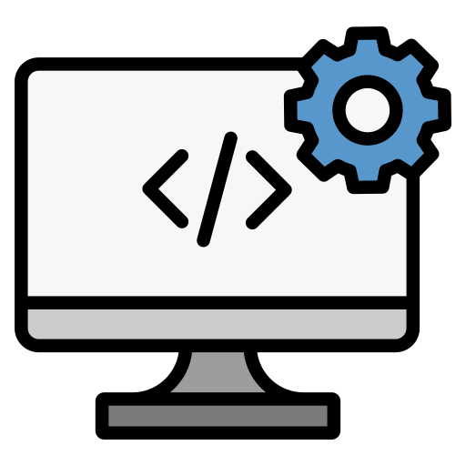
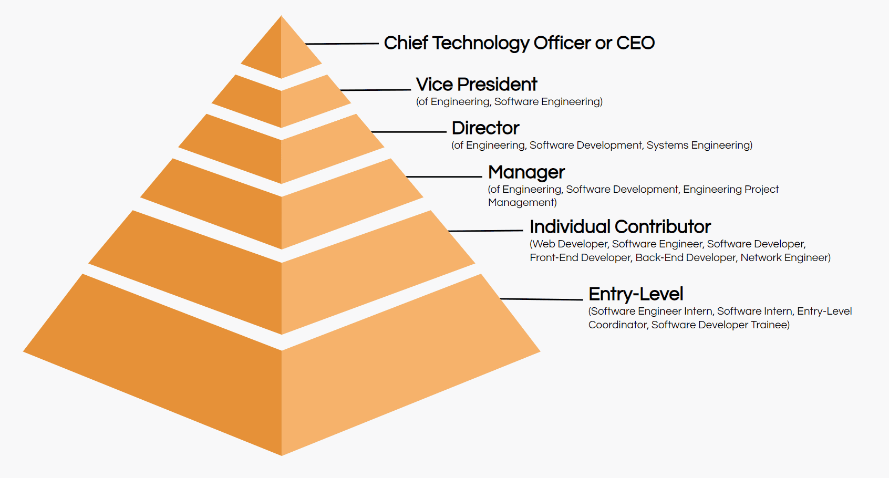
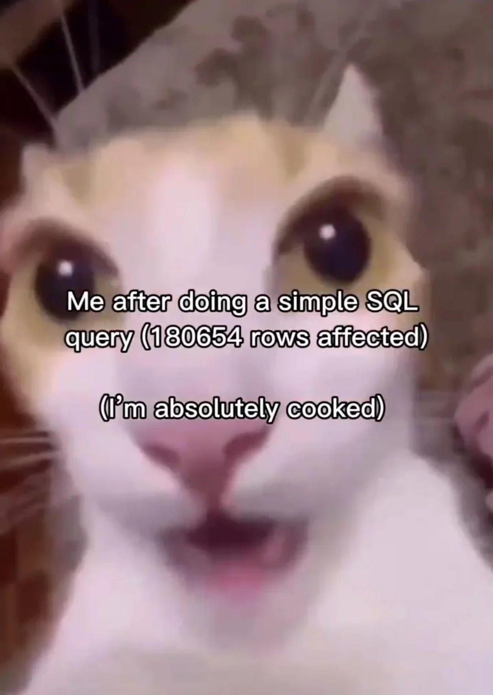

Словарь IT-сленга
Популярные термины и выражения в IT-индустрии
🔧 Разработка и процессы
Boilerplate
Boilerplate — шаблонный служебный код без бизнес‑логики
Spaghetti code
Spaghetti code — запутанный код, который сложно поддерживать
Task / Таска
Задачка, задача в работе
ветки в другую. Процесс, когда разработчик предлагает внести свои изменения в основную ветку проекта. Подробнее про Pull Request →">Pull Request / Pull Request — запрос на слияние изменений в коде.">ПР
Запрос на слияние изменений в коде
CI/CD — собранные файлы для деплоя.">Артефакт
Artifact — результат работы (код, документация, сборки)
Git). Каждый коммит содержит набор изменений и сообщение, описывающее что было сделано.">Коммит
Commit — сохранение изменений в Git
ветки в другую. Процесс объединения кода от разных разработчиков или из разных веток. Подробнее про слияние →">Мердж
Merge — слияние веток в Git
коммитов из одной ветки в другую. Позволяет взять конкретные изменения без слияния всей ветки. Также может означать выбор самого лучшего примера для, например, демонстрации заказчику.">Черрипикнуть
Cherry-pick — выборочное применение коммитов или выбор лучшего примера.
Дебажить
Debug — поиск и исправление ошибок
сборку, тестирование и публикацию для пользователей.">Релиз
Release — выпуск новой версии продукта
CI/CD для автоматизации процесса.">Деплой
Deploy — развертывание приложения
слиянием в Pull Request.">Ревью / Код-ревью
Code Review — проверка кода коллегами
ветка в системе контроля версий. Отдельная линия разработки, позволяющая работать над функционалом независимо от основной ветки.">Бранч
Branch — ветка в Git
ветка в Git, созданная для разработки новой функциональности. Позволяет изолировать работу над фичей от основной ветки до момента готовности к слиянию.">Фиче ветка / Feature Branch
Feature Branch — ветка для разработки новой функциональности
слиянием в основную ветку (main/master). Обычно используется для тестирования и интеграции изменений от разных разработчиков перед релизом.">Dev Branch / Dev ветка
Development Branch — ветка разработки
Тикет
Ticket — задача в трекере
Билд
Build — сборка приложения
Git). Может быть локальным или удаленным (на GitHub, GitLab и т.д.).">Репозиторий / Git.">Репо
Repository — хранилище кода
Git, которая определяет структуру веток для разработки. Включает основные ветки (main, develop) и вспомогательные (feature, release, hotfix).">Git Flow
Git Flow — модель ветвления в Git
CI/CD, тестов и частых небольших коммитов. Альтернатива Git Flow в более простом варианте.">Trunk-Based Development
Trunk-Based Development — разработка от одной основной ветки
Версионирование
Versioning — присвоение версий продукту
Pull Request или предложения. Означает, что изменения не приняты и требуют доработки.">Реджект
Reject — отклонение изменений
Pull Request. Означает, что код проверен и готов к слиянию.">Аппрув
Approve — одобрение изменений
Канареечный релиз
Canary Release — постепенное развертывание новой версии
Pull Request, используемое в GitLab. Запрос на слияние изменений из одной ветки в другую.">Мерж-реквест / Merge Request
Merge Request — запрос на слияние (GitLab)
коммита или изменений в Git. Создает новый коммит, который отменяет изменения предыдущего коммита, сохраняя историю.">Реверт
Revert — откат коммита в Git
💬 Коммуникация и команда
Синк
Синхронное общение, созвон
Стендап
Standup — ежедневная короткая встреча команды
Ретро
Retrospective — ретроспектива команды
Онбординг
Onboarding — адаптация нового сотрудника
Оффбординг
Offboarding — процесс выхода сотрудника
Менторинг
Mentoring — наставничество
One-to-one / 1-on-1
1-on-1 — индивидуальная встреча
спринт). Обсуждение задач, приоритетов и распределения работы.">Планерка
Planning meeting — планировочная встреча
стендапа.">Дейли / Daily Standup
Daily Standup — ежедневная встреча команды
Грейд
Grade — уровень специалиста в компании
🚀 Методологии и практики
MVP
Minimum Viable Product — минимально жизнеспособный продукт
Scrum и Agile. В конце спринта проводится демо и ретроспектива.">Спринт
Sprint — короткий период работы над задачами
Скрам и Канбан. Подробнее →">Эджайл
Agile — гибкая методология разработки
Agile. Включает роли (Product Owner, Scrum Master), артефакты (Product Backlog, Бэклог) и события (Sprint, Daily Scrum). Подробнее →">Скрам
Scrum — фреймворк управления проектами
Agile методологии.">Канбан
Kanban — методология визуализации работы
Бэклог
Backlog — список планируемых задач
Стори
User Story — описание функциональности
Эстимейт
Estimate — оценка сложности задачи
Квартал
Quarter — период в три месяца
Майлстоун
Milestone — важная веха в проекте
Эпик
Epic — большая функциональность
Демо
Demo — демонстрация выполненной работы
🐛 Технические термины
Баг
Bug — ошибка в программе
Фича
Feature — новая функциональность
Подробнее про Python →">Рефакторинг
Refactoring — улучшение кода без изменения функциональности
Легаси
Legacy — устаревший код или система
Техдолг
Technical Debt — накопленные проблемы в коде
Хотфикс
Hotfix — срочное исправление критической ошибки
Костыль
Workaround — временное решение проблемы
SaaS
Software as a Service — программное обеспечение как услуга
Роллбэк
Rollback — откат к предыдущей версии
Code Freeze
Code Freeze — заморозка изменений перед релизом
Продакшн / Прод
Production — рабочая среда для пользователей
Дев
Development — среда разработки
Подробнее про Python →">АПИ
API — интерфейс для взаимодействия приложений
Эндпоинт
Endpoint — точка доступа к API
Микросервис
Microservice — независимый сервис в архитектуре
Монолит
Monolith — единое приложение
Стек
Tech Stack — набор технологий для разработки
Фреймворк
Framework — каркас для разработки
Подробнее про Python →">Паттерн
Design Pattern — паттерн программирования
Подробнее про Python →">Синтаксический сахар
Syntactic Sugar — упрощение синтаксиса для удобства
машинном обучении для ускорения обучения моделей благодаря способности выполнять множество операций одновременно.">ГПУ
GPU — графический процессор для параллельных вычислений
GPU, который специализируется на параллельных вычислениях.">ЦПУ
CPU — центральный процессор
CI/CD пайплайне или задачу в системе управления задачами.">Джоба
Job — задача или процесс в системе
Локалхост
Localhost — адрес локального компьютера
Ребут
Reboot — перезагрузка системы
Хардкод
Hardcode — жёстко закодированные значения
Инстанс
Instance — экземпляр объекта или сервиса
Опенсорс
Open Source — открытый исходный код
Пет-проект
Pet Project — любительский проект для обучения
Пинг / Пингануть
Ping — проверка доступности сетевого узла
Дрова / Драйвер
Driver — программное обеспечение для работы с оборудованием
Либы / Библиотеки
Libraries — наборы готовых функций и классов
Сериализация
Serialization — преобразование объекта в формат для хранения или передачи
сериализации, восстановление объекта из сохраненного формата (JSON, XML, бинарного формата).">Десериализация
Deserialization — восстановление объекта из сохраненного формата
UX/UI
User Experience / User Interface — пользовательский опыт и интерфейс
Профилирование
Profiling — анализ производительности программы
Тайм-аут / Timeout
Timeout — максимальное время ожидания ответа
404
HTTP 404 — ошибка 'Not Found'
500 / Пятисотить
HTTP 500 — внутренняя ошибка сервера
👥 Роли и должности

Тимлид
Team Lead — руководитель команды
ПМ
Project Manager — менеджер проекта
ПО
Product Owner — владелец продукта
Девопс
DevOps Engineer — специалист по автоматизации и инфраструктуре
Дата инженер
Data Engineer — специалист по инфраструктуре данных
ML-пайплайнами, оптимизацией и деплоем AI-решений в продакшн.">AI инженер
AI Engineer — специалист по разработке AI/ML систем
Data Scientist
Data Scientist — специалист по анализу данных и ML
МЛопс
MLOps Engineer — инженер по автоматизации ML процессов и инфраструктуры
QA
Quality Assurance — тестировщик
Подробнее про Python →">Фронтенд
Frontend Developer — разработчик интерфейса
API. Подробнее про Python →">Бэкенд
Backend Developer — разработчик серверной части
Фуллстек
Full Stack Developer — универсальный разработчик
🔐 Безопасность и инфраструктура
GitHub Actions. Подробнее →">CI/CD
Continuous Integration/Deployment — автоматизация сборки и деплоя
Docker — платформа для контейнеризации приложений. Позволяет упаковать приложение со всеми зависимостями в контейнер.">Докер
Docker — платформа контейнеризации
Kubernetes (K8s) — система оркестрации контейнеров. Управляет развертыванием, масштабированием и работой контейнерных приложений.">Кубер
Kubernetes — оркестрация контейнеров
Машина / GPU'.">Тачка
Сервер или вычислительная машина (сленг ML-инженеров)
Виртуалка / VM
Virtual Machine — виртуальная машина
Хост
Host — компьютер или сервер в сети
Прокси
Proxy — промежуточный сервер
Data Lake
Data Lake — большое хранилище сырых данных в облаке
Инфраструктура
Infrastructure — техническая основа системы
Мониторинг
Monitoring — отслеживание состояния системы
Логи
Logs — записи о событиях системы
Метрики
Metrics — количественные показатели системы
Алерт
Alert — уведомление о проблеме
SLA
Service Level Agreement — соглашение об уровне обслуживания
Vault
Vault — система для безопасного хранения секретов
Кластер
Cluster — группа серверов, работающих как единая система
Docker приложений. Позволяет описать все сервисы, сети и тома в одном файле YAML и запустить их одной командой.">Композ / Docker Compose
Docker Compose — инструмент для многоконтейнерных приложений
🧪 Тестирование
Юнит-тест
Unit Test — тест отдельной функции
Интеграционный тест
Integration Test — тест взаимодействия компонентов
E2E тест
End-to-End Test — тест полного сценария
Регрессия
Regression — поломка существующего функционала
Мок
Mock — имитация для тестирования
Покрытие
Code Coverage — процент протестированного кода
💾 Базы данных

SQL
Structured Query Language — язык запросов к БД
NoSQL
Not Only SQL — нереляционные базы данных
Миграция
Migration — изменение структуры БД
ETL
Extract, Transform, Load — процесс обработки данных
Индекс
Index — структура для ускорения поиска
Транзакция
Transaction — атомарная группа операций
Репликация
Replication — копирование данных на несколько серверов